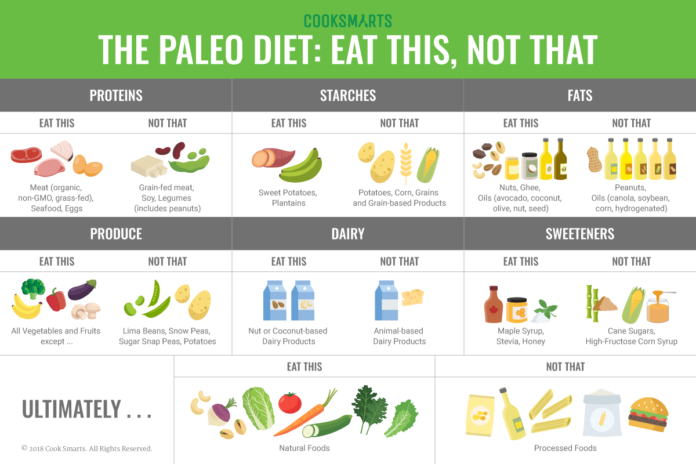

نظام الباليو دايت (Paleo Diet) هو نهج غذائي يستوحي من نمط الغذاء الذي كان يتبعه الأجداد البشريون في العصور القديمة، خاصة في فترة العصر الحجري. يهدف هذا النظام إلى تقليد نمط الغذاء الذي كان متاحًا للبشر في تلك الفترة ويستند إلى فكرة أن جسم الإنسان متكيف مع أنواع معينة من الأطعمة.
1. البروتينات: اللحوم العضوية، والدواجن، والسمك، والبيض، والمكسرات، والبذور. 2. الخضروات: الخضروات ذات الأوراق الخضراء، والبندورة، والخيار، والبروكلي، والجزر، والفلفل. 3. الفواكه: الفواكه الطبيعية غير المعالجة مثل التفاح، والبطيخ، والبرتقال، والتوت. 4. المكسرات والبذور: اللوز، والجوز، والكاجو، والكتان، وبذور الشيا. 5. الدهون الصحية: زيت الزيتون، وزيت جوز الهند، وزبدة الغير معدلة وراثيًا.
1. الحبوب والمنتجات الحبوب: القمح، والشعير، والأرز، والشوفان. 2. المنتجات الألبان: الحليب، والجبن، والزبدة، والزبادي. 3. السكر والمنتجات المحلاة: السكر الأبيض، والعسل، والشراب الذرة عالي الفركتوز. 4. الزيوت المكررة والمهدرجة: زيوت الطبخ التجارية مثل زيت النبات، وزيت الذرة، وزيت فول الصويا. 5. المواد الحافظة والأصباغ الاصطناعية: المواد الكيميائية المضافة إلى الأطعمة المصنعة.
يدعم مؤيدو الباليو دايت أن هذا النظام الغذائي يعزز الصحة العامة ويعزز فقدان الوزن، ويحسن مستويات الطاقة والهضم، ويقلل من مشاكل الجلد والتهابات المفاصل. ومع ذلك، يجب ملاحظة أن هذا النظام الغذائي لديه بعض النقاط المثيرة للجدل، وقد يكون غير مناسب للجميع